TECHNICAL-CONTROL-1.1 — feet, ankles and lower-leg IK (focused visual fix; candidate, not frozen)
LOCAL review page — the character is a real player's model: never published. Feet lab: http://127.0.0.1:8361/sandbox/visual/technical_control11.html — views feet: quad · front 3/4 · rear 3/4 · side · foot level, 1× · 0.5× · 0.25× · 0.1×, Body TC1.1 · TC1 · TC1 vs TC1.1 (the same simulation side by side), the live joint angles of both legs at the bottom of each view (amber beyond the comfort range, red beyond the hard range). Gameplay is untouched: Ball Control, Dribbling, Agility, touch timing, ball separation, action selection, styles and every authoritative contact are TECHNICAL-CONTROL-1's — with animation off, with TECHNICAL-CONTROL-1's body and with this body the ball every tick, the player's path and every contact are bit-identical (48/48 runs; the sweep's own fingerprints 48/48). Protected and frozen files: 959/959 identical.
1 · What was wrong, what changed
TECHNICAL-CONTROL-1's body put each foot where the contact needed it (a few cm) but keyed the foot's ORIENTATION in the world and let the ankle absorb whatever the shin's IK left. Measured on the posed skeleton: the ankle folded to ~90° dorsiflexion through every swing's heel recovery (the foot kept level while the shin swung back), the foot twisted up to 180° under the shin, the knee locked straight in ~10 % of frames, the hip rotated up to 94°, the ankle reached 4 000 – 21 000 °/s around contacts, and the boot passed up to 15 cm into the ball (thousands of frames).
This body keeps the contacts and foot paths and rebuilds the leg as a chain, in your order: 1 the pelvis (turns up to 24° toward the touching leg when the leg is pressed, the trunk counter-rotating; lowers into the touch; moves toward a leg out of reach), 2 the hip (its swivel turns the whole leg toward the foot — the knee follows the foot), 3 the knee (two-bone IK with a soft extension limit), 4 the tibia and ankle (only the remainder, each inside its range), 5 the contact surface (searched per contact: the foot's yaw, pitch and roll and the boot's placement such that the labelled face of DRIBBLE-1's boot collider is the one that meets the ball, gap 0, within a cone of the impulse, with the leg in its comfort ranges and the rotation affordable in the time the swing gives). Orientation is planned in joint space: a swing follows RUN-1's own swing channels, winds up into the contact's orientation as early as the swing allows, holds the surface through the ball and follows through; only the contact (≈ 20 ms) and the landing (40 ms) lock the foot in the world. A swinging foot goes round or over the ball. The support foot is planted clear of the ball for its whole stance (moved up to 28 cm to its own side or back), stays flat with the knee over it, lifts its heel about the ball of the foot as soon as the ankle would dorsiflex past 20° or the leg nears its length (push-off), rolls onto its edge for what the subtalar joint cannot take, and leaves the turf a little earlier when the body has left it behind (presentation only: the gait the simulation uses is unchanged).
2 · The numbers — TECHNICAL-CONTROL-1's body vs this body, on the same simulations
| all 16 review cases (median / worst over the runs) | 99 / 99 / 99 | 80 / 80 / 80 | 50 / 50 / 50 | RUN-1 (the approved running gait), 5.5 · 8 m/s | |||
|---|---|---|---|---|---|---|---|
| TC1 body | TC1.1 body | TC1 body | TC1.1 body | TC1 body | TC1.1 body | ||
| ankle angular velocity, p99 (median of runs) °/s | 4277 | 853 | 2990 | 834 | 2491 | 922 | 1139 · 1340 |
| ankle angular velocity, worst frame °/s | 20970 | 1606 | 17913 | 1698 | 18252 | 1908 | 1237 · 1463 |
| ankle angular acceleration, p99 (median) °/s² | 596137 | 81685 | 569675 | 67577 | 566168 | 65870 | 74677 · 110425 |
| foot yaw relative to the shin, worst ° | 179.6 | 25.0 | 179.8 | 29.1 | 180.0 | 25.3 | 10.2 · 6.4 |
| ankle dorsiflexion, worst ° (folding) | 89.6 | 28.0 | 89.5 | 27.5 | 89.7 | 26.5 | 31.3 · 31.0 |
| ankle plantarflexion, worst ° (negative) | -46.2 | -41.1 | -60.7 | -43.8 | -65.9 | -43.5 | -40.4 · -38.2 |
| inversion, worst ° | 180.0 | 21.9 | 180.0 | 21.6 | 179.9 | 21.7 | -2.7 · -3.2 |
| eversion, worst ° (negative) | -180.0 | -17.6 | -180.0 | -18.0 | -180.0 | -18.0 | -17.8 · -16.1 |
| knee flexion, minimum ° (straight / locked) | 0.2 | 7.5 | 0.2 | 7.1 | 0.2 | 7.1 | 15.6 · 20.3 |
| frames with a knee locked straight (< 4°), worst run % | 9.7 | 0.0 | 9.9 | 0.0 | 10.5 | 0.0 | |
| hip rotation, range ° (internal −, external +) | -65.5 | -40.4 | -64.9 | -39.8 | -65.8 | -40.5 | |
| … maximum ° | 93.6 | 45.8 | 93.7 | 47.4 | 92.2 | 50.8 | -7.5…10.2 |
| joint-frames beyond the HARD range, % (summed over joints, median run) | 95.0 | 0.0 | 96.7 | 0.0 | 99.8 | 0.0 | |
| … worst run % | 112.4 | 0.4 | 107.4 | 0.6 | 106.1 | 2.9 | |
| boot inside the ball: swinging-foot frames (all runs) | 3914 | 26 | 3549 | 29 | 2464 | 21 | |
| … planted-foot frames (all runs) | 703 | 7 | 467 | 0 | 187 | 0 | |
| … deepest, cm | 15.5 | 3.7 | 14.8 | 4.8 | 14.4 | 4.0 | |
| planted-foot slip at its support point, worst run mm | 2.2 | 8.6 | 0.7 | 16.0 | 0.0 | 16.1 | |
| contacts | 146 | 146 | 143 | 143 | 121 | 121 | |
| boot – ball gap at the contact, worst |cm| (0 = the boot just touches) | 9.0 | 0.2 | 9.0 | 0.1 | 9.0 | 0.1 | |
| contacts the body could prepare (late decisions excluded) | 146 | 136 | 143 | 133 | 121 | 112 | |
| … the labelled surface is the boot face that meets the ball | 141 | 136 | 135 | 133 | 116 | 112 | |
| … the surface's working direction within its cone of the impulse | 142 | 136 | 135 | 132 | 113 | 112 | |
| … surface vs impulse, median ° | 0.5 | 8.5 | 1.8 | 9.0 | 2.8 | 7.0 | |
| … worst ° | 62.6 | 36.0 | 86.7 | 37.6 | 74.6 | 34.6 | |
| the ankle's own rotation in the 50 ms BEFORE a contact, median ° | 9.7 | 5.5 | 10.9 | 4.9 | 11.9 | 5.5 | |
| … worst ° (the ankle snapping into the ball) | 110.9 | 21.4 | 26.1 | 21.1 | 23.0 | 19.9 | |
| the ankle's own rotation in the 50 ms AFTER a contact, median ° | 15.1 | 16.1 | 16.3 | 14.7 | 24.6 | 18.2 | |
| … worst ° | 119.5 | 28.7 | 107.3 | 35.2 | 91.0 | 39.3 | |
| the toe swinging toward the ball: foot yaw in the 50 ms before, worst ° | 111.8 | 22.3 | 38.3 | 27.7 | 3.2 | 20.7 | |
| … away after: the 50 ms after, worst ° | 126.6 | 80.4 | 118.6 | 74.0 | 98.8 | 63.9 | |
| ankle angular velocity within ±100 ms of a contact, worst °/s | 20970 | 1606 | 17913 | 1698 | 5002 | 1908 | |
| touching leg's reach at the contact (hip – ankle / leg length), worst | 0.997 | 0.986 | 0.994 | 0.987 | 0.992 | 0.985 | |
| support knee at the contact, minimum ° | 0.2 | 7.7 | 0.2 | 8.1 | 0.2 | 9.2 | |
| late decisions (the simulation decided the contact at the contact itself) | 0 | 10 | 0 | 10 | 0 | 9 | |
Ankle angular velocity and acceleration: the foot relative to the shin. RUN-1's p99 is reached during its push-off. "Boot inside the ball": the hull of DRIBBLE-1's boot collider overlapping the ball by more than 5 mm. A contact's surface error: the angle between the labelled surface's working direction (inside / outside normal, the laces along the foot, the sole down) and the impulse. Late decisions: the episode chose the contact's surface or direction at the contact itself (the intent changed after its last re-plan) — the leg met the ball prepared for the planned touch and is not snapped to the new one; listed below as visually infeasible as scheduled. CPU: simulation alone 12.3 ms per simulated second; with TECHNICAL-CONTROL-1's body 20.4; with this body 29.2 (worst single 240 Hz step 11.3 ms — a re-plan runs the contact searches).
3 · The priority list — 99 / 99 / 99 first, then 80 / 80 / 80 and 50 / 50 / 50
1 straight high-speed dribbling (8 m/s) · 2 straight dribbling (5.5 m/s) · 3 acceleration into space (3 → 8.5 m/s) · 4 rapid inside touches (tight left-right) · 5 rapid outside touches · 6 inside → outside · 7 outside → inside · 8 double touch · 9 drag-back / push (sole) · 10 sole stop · 11 60° cut · 12 90° cut · 13 120° tight turn · 14 150° tight turn (Cruyff-like) · 15 180° reversal · 16 dominant-foot repeated touches (left-footed)
1 · straight high-speed dribbling (8 m/s) — TURN0_V8 · seed 1 · window 0.45–2.45 s · open in the lab · TC1 vs TC1.1

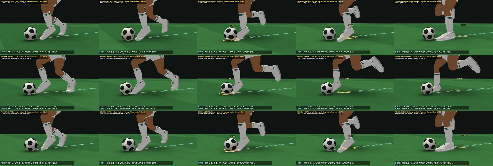

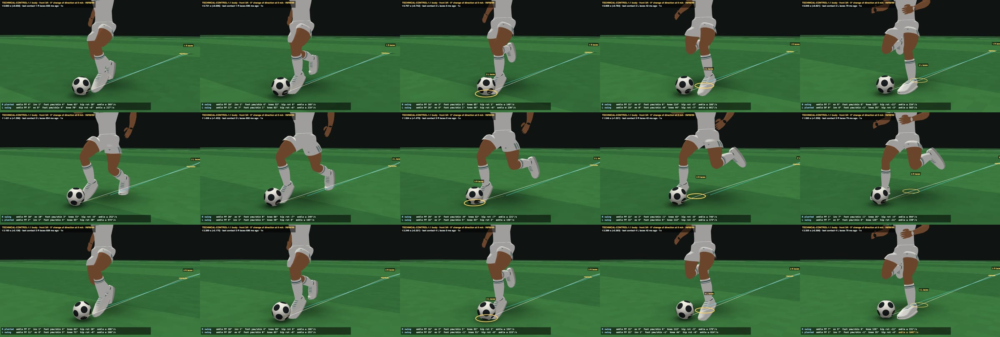

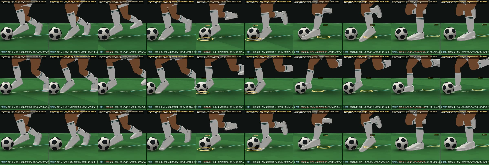
| ratings | ankle ω p99 · worst °/s TC1 → TC1.1 | worst DF ° | min knee ° | beyond hard range % | boot in ball frames | slip mm | late decisions | worst surface error ° (prepared) |
|---|---|---|---|---|---|---|---|---|
| 99/99/99 | 5406 · 5496 → 1116 · 1606 | 89 → 19 | 0.2 → 9.0 | 93.7 → 0 | 410 → 0 | 0 → 0 | 0 | 10.3 |
| 80/80/80 | 5403 · 5536 → 1144 · 1324 | 89 → 19 | 0.2 → 8.6 | 94.0 → 0 | 338 → 1 | 0 → 0 | 0 | 12.3 |
| 50/50/50 | 5406 · 5549 → 1151 · 1650 | 89 → 19 | 0.2 → 8.0 | 96.6 → 0 | 208 → 0 | 0 → 0 | 0 | 16.2 |
No flagged contacts.
2 · straight dribbling (5.5 m/s) — STRAIGHT · seed 1 · window 0.4–2 s · open in the lab · TC1 vs TC1.1

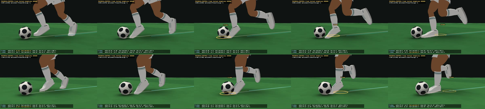

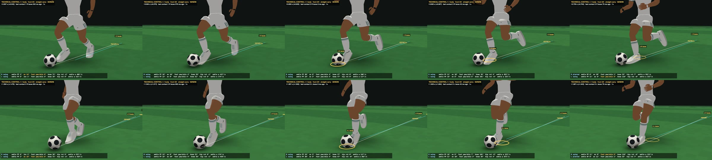

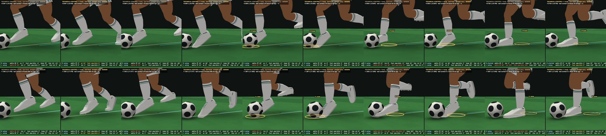
| ratings | ankle ω p99 · worst °/s TC1 → TC1.1 | worst DF ° | min knee ° | beyond hard range % | boot in ball frames | slip mm | late decisions | worst surface error ° (prepared) |
|---|---|---|---|---|---|---|---|---|
| 99/99/99 | 4532 · 4717 → 830 · 1185 | 89 → 20 | 0.2 → 9.8 | 97.4 → 0 | 133 → 0 | 0 → 0 | 0 | 9.8 |
| 80/80/80 | 4533 · 4718 → 834 · 1187 | 89 → 20 | 0.2 → 9.8 | 93.6 → 0 | 163 → 0 | 0 → 0 | 0 | 7.5 |
| 50/50/50 | 4519 · 4769 → 890 · 1431 | 89 → 20 | 0.2 → 9.8 | 89.4 → 0 | 110 → 0 | 0 → 0 | 0 | 8.8 |
No flagged contacts.
3 · acceleration into space (3 → 8.5 m/s) — ACCEL · seed 1 · window 0.1–1.9 s · open in the lab · TC1 vs TC1.1

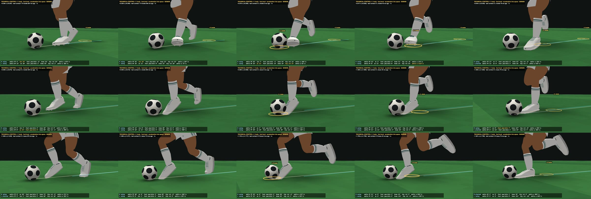

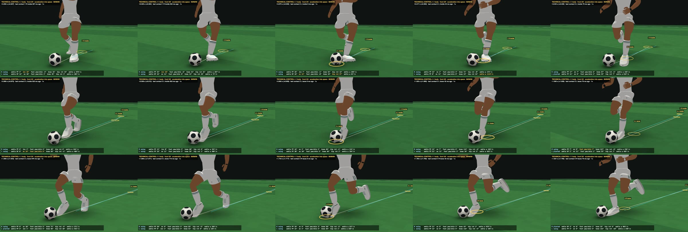

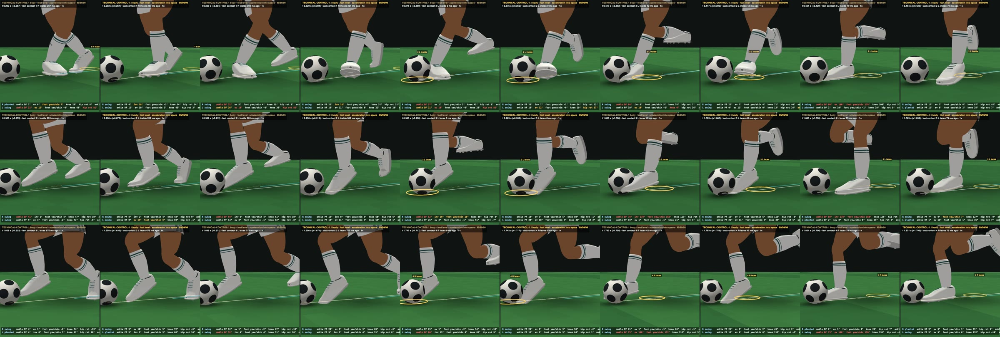
| ratings | ankle ω p99 · worst °/s TC1 → TC1.1 | worst DF ° | min knee ° | beyond hard range % | boot in ball frames | slip mm | late decisions | worst surface error ° (prepared) |
|---|---|---|---|---|---|---|---|---|
| 99/99/99 | 5406 · 5510 → 1144 · 1505 | 90 → 27 | 0.2 → 8.4 | 97.8 → 0 | 368 → 1 | 0 → 0.3 | 0 | 17.2 |
| 80/80/80 | 5396 · 5515 → 1141 · 1397 | 90 → 19 | 0.2 → 8.6 | 98.1 → 0 | 288 → 3 | 0 → 2.1 | 0 | 19.0 |
| 50/50/50 | 5390 · 5641 → 1127 · 1395 | 90 → 20 | 0.2 → 8.6 | 100.0 → 0 | 181 → 0 | 0 → 0 | 0 | 24.1 |
Flagged contacts (visually infeasible as scheduled, or at a limit): 99 · 0.35 s L inside: reach 0.986
4 · rapid inside touches (tight left-right) — LR · seed 1 · window 1.2–2.75 s · open in the lab · TC1 vs TC1.1

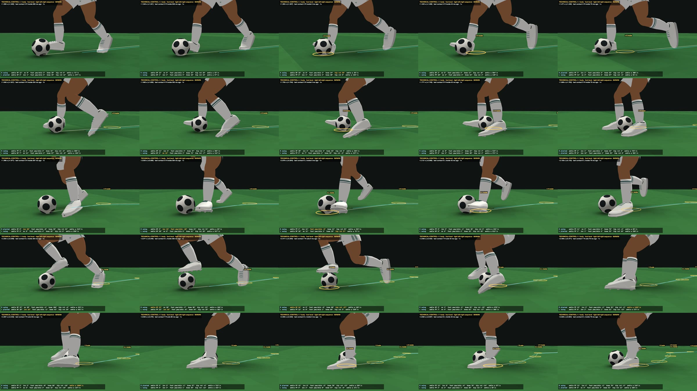

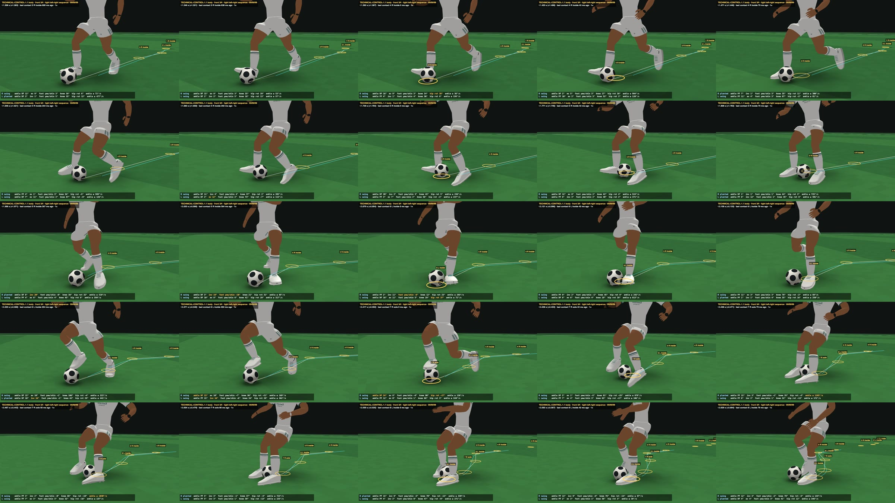

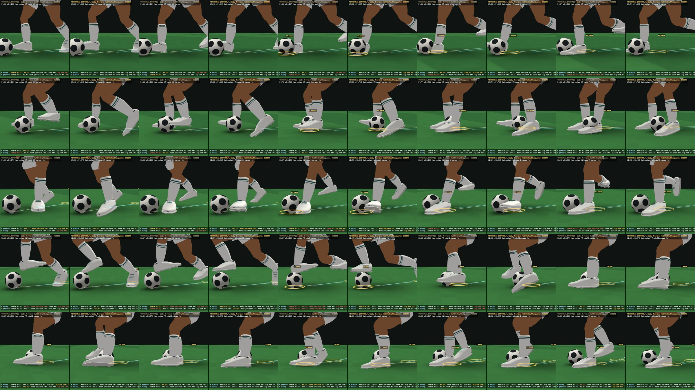
| ratings | ankle ω p99 · worst °/s TC1 → TC1.1 | worst DF ° | min knee ° | beyond hard range % | boot in ball frames | slip mm | late decisions | worst surface error ° (prepared) |
|---|---|---|---|---|---|---|---|---|
| 99/99/99 | 2825 · 5162 → 974 · 1357 | 87 → 27 | 0.2 → 8.7 | 95.9 → 0 | 339 → 3 | 0 → 1.1 | 0 | 36.0 |
| 80/80/80 | 1866 · 3005 → 830 · 1340 | 82 → 23 | 0.2 → 9.0 | 93.6 → 0 | 241 → 0 | 0.7 → 0 | 0 | 13.6 |
| 50/50/50 | 2201 · 3005 → 663 · 1104 | 84 → 20 | 0.2 → 8.7 | 106.1 → 0.86 | 150 → 0 | 0 → 0 | 1 | 28.5 |
Flagged contacts (visually infeasible as scheduled, or at a limit): 99 · 2.883 s R inside: reach 0.986 · 80 · 0.683 s R inside: reach 0.986 · 50 · 1.367 s R inside: late decision (INSIDE→INSIDE Δ43°)
5 · rapid outside touches — CUT30 · style close control · seed 1 · window 1–2.05 s · open in the lab · TC1 vs TC1.1

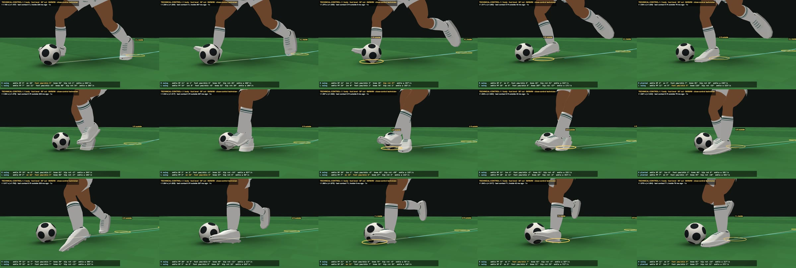

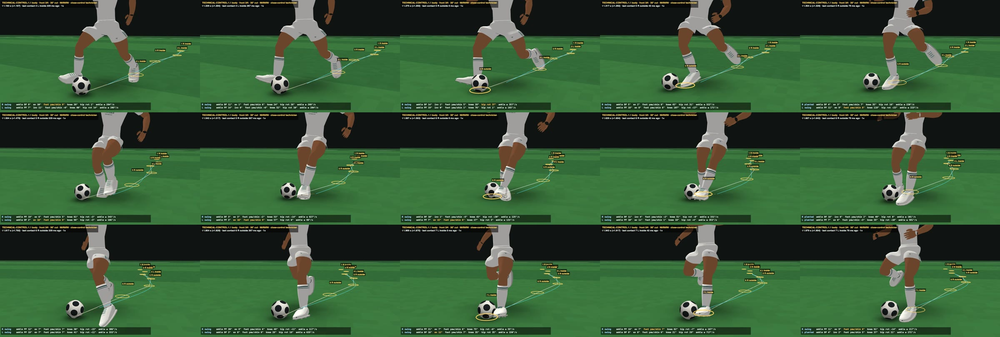

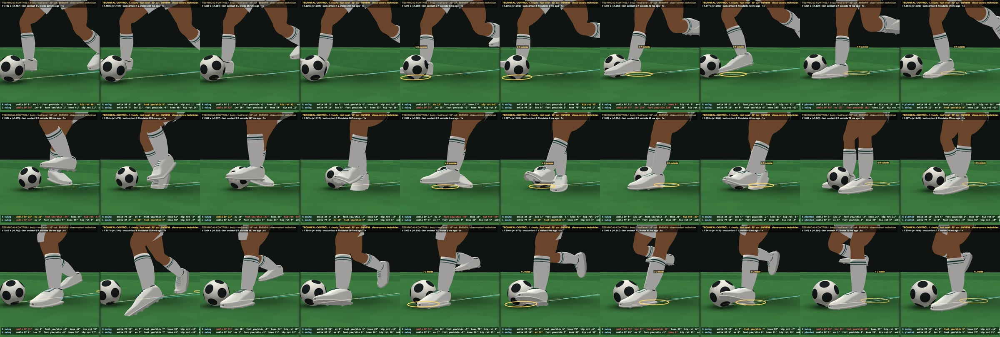
| ratings | ankle ω p99 · worst °/s TC1 → TC1.1 | worst DF ° | min knee ° | beyond hard range % | boot in ball frames | slip mm | late decisions | worst surface error ° (prepared) |
|---|---|---|---|---|---|---|---|---|
| 99/99/99 | 4575 · 5492 → 846 · 1231 | 89 → 26 | 0.2 → 17.4 | 88.7 → 0 | 282 → 2 | 0 → 0 | 1 | 24.5 |
| 80/80/80 | 4564 · 4770 → 833 · 1230 | 89 → 21 | 0.2 → 9.6 | 97.3 → 0.26 | 264 → 0 | 0 → 8.2 | 1 | 14.6 |
| 50/50/50 | 4539 · 4723 → 962 · 1430 | 89 → 19 | 0.2 → 9.8 | 104.3 → 0 | 163 → 0 | 0 → 0.1 | 1 | 23.7 |
Flagged contacts (visually infeasible as scheduled, or at a limit): 99 · 1.25 s R outside: late decision (INSIDE→OUTSIDE Δ127°) · 80 · 1.25 s R outside: late decision (INSIDE→OUTSIDE Δ73°) · 50 · 1.25 s R outside: late decision (LACES→OUTSIDE Δ66°)
6 · inside → outside — TURN100_V4 · style dominant foot · seed 2 · window 1.9–3 s · open in the lab · TC1 vs TC1.1

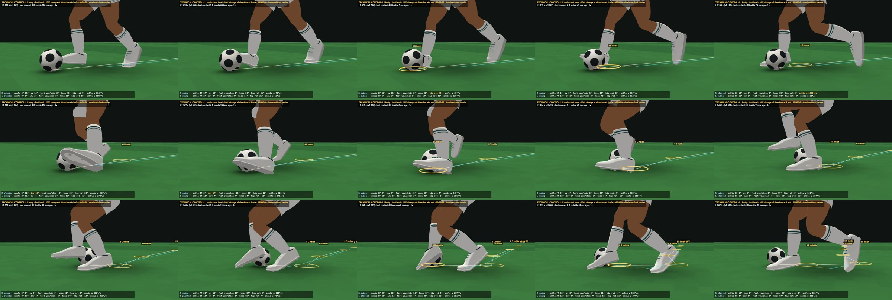

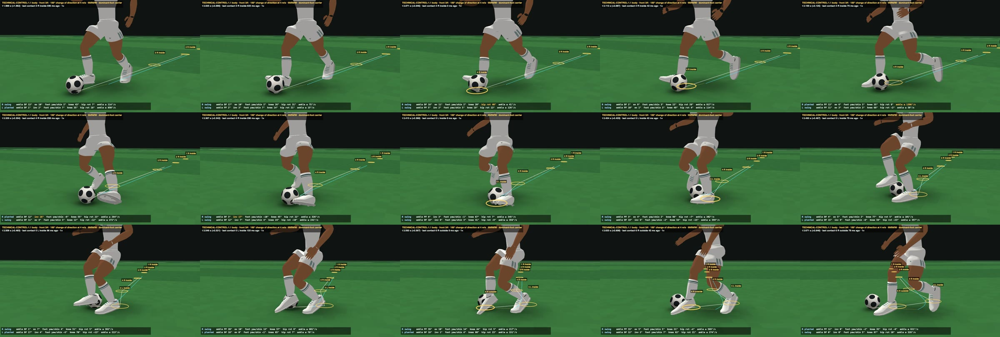

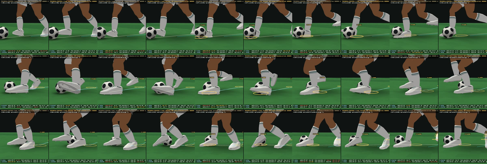
| ratings | ankle ω p99 · worst °/s TC1 → TC1.1 | worst DF ° | min knee ° | beyond hard range % | boot in ball frames | slip mm | late decisions | worst surface error ° (prepared) |
|---|---|---|---|---|---|---|---|---|
| 99/99/99 | 2610 · 3007 → 969 · 1467 | 84 → 21 | 0.2 → 11.8 | 91.0 → 0.27 | 184 → 0 | 0 → 0.1 | 2 | 30.1 |
| 80/80/80 | 2678 · 3008 → 996 · 1698 | 85 → 25 | 0.2 → 7.8 | 98.8 → 0 | 155 → 0 | 0 → 0.1 | 1 | 28.5 |
| 50/50/50 | 2136 · 3006 → 732 · 1282 | 85 → 23 | 0.2 → 10.8 | 99.6 → 2.88 | 100 → 0 | 0 → 0.1 | 1 | 27.3 |
Flagged contacts (visually infeasible as scheduled, or at a limit): 99 · 2.046 s R inside: late decision (INSIDE→INSIDE Δ25°) · 99 · 2.567 s R outside: late decision (OUTSIDE→OUTSIDE Δ27°) · 80 · 0.683 s R inside: reach 0.986 · 80 · 2.046 s R inside: late decision (INSIDE→INSIDE Δ32°); reach 0.986 · 50 · 2.046 s R inside: late decision (INSIDE→INSIDE Δ51°)
7 · outside → inside — CUT60 · style close control · seed 2 · window 1.6–2.5 s · open in the lab · TC1 vs TC1.1

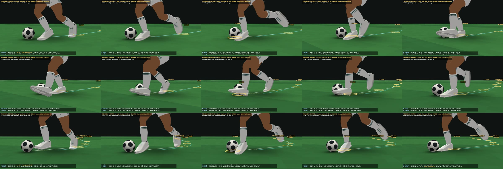

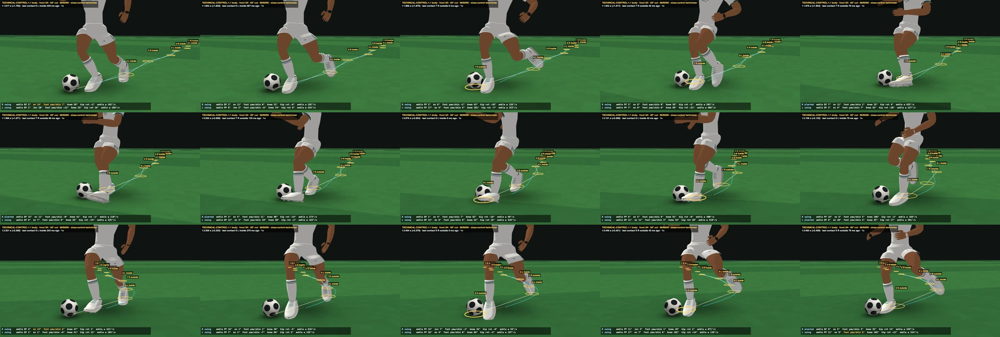

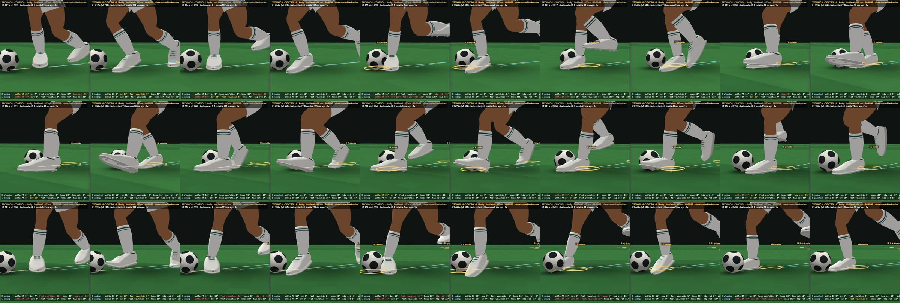
| ratings | ankle ω p99 · worst °/s TC1 → TC1.1 | worst DF ° | min knee ° | beyond hard range % | boot in ball frames | slip mm | late decisions | worst surface error ° (prepared) |
|---|---|---|---|---|---|---|---|---|
| 99/99/99 | 4544 · 4812 → 843 · 1292 | 89 → 26 | 0.2 → 19.1 | 93.3 → 0 | 305 → 0 | 2.1 → 0.7 | 0 | 15.4 |
| 80/80/80 | 4352 · 4806 → 843 · 1230 | 89 → 21 | 0.2 → 16.4 | 97.3 → 0 | 254 → 0 | 0.6 → 0 | 1 | 13.8 |
| 50/50/50 | 4146 · 4736 → 940 · 1426 | 90 → 20 | 0.2 → 9.8 | 100.0 → 0 | 162 → 0 | 0 → 3.1 | 0 | 21.6 |
Flagged contacts (visually infeasible as scheduled, or at a limit): 80 · 2.421 s R laces: late decision (OUTSIDE→LACES Δ3°)
8 · double touch — LR · style two foot · seed 1 · window 2.1–2.9 s · open in the lab · TC1 vs TC1.1

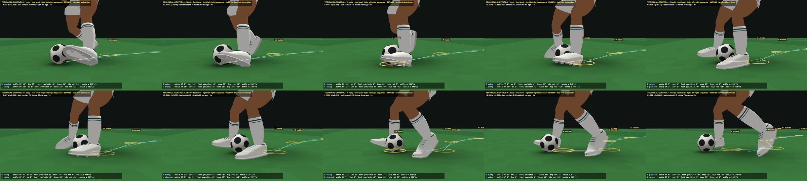

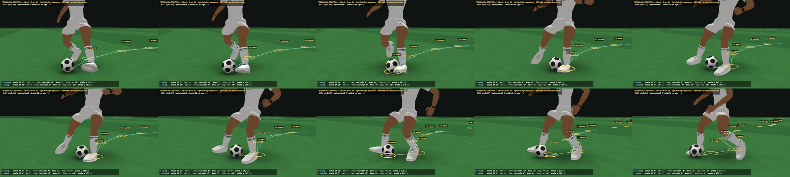

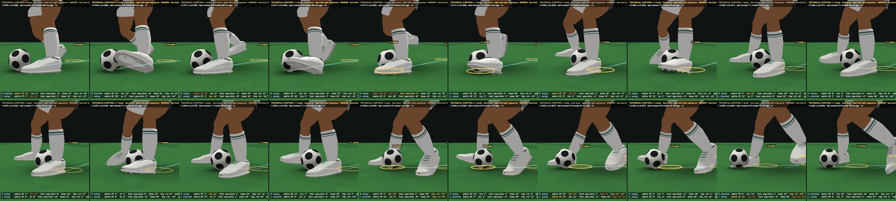
| ratings | ankle ω p99 · worst °/s TC1 → TC1.1 | worst DF ° | min knee ° | beyond hard range % | boot in ball frames | slip mm | late decisions | worst surface error ° (prepared) |
|---|---|---|---|---|---|---|---|---|
| 99/99/99 | 2592 · 3713 → 819 · 1199 | 82 → 26 | 0.2 → 10.0 | 83.4 → 0.14 | 276 → 0 | 2 → 2.4 | 1 | 31.0 |
| 80/80/80 | 1866 · 3005 → 764 · 1340 | 82 → 23 | 0.2 → 9.0 | 93.6 → 0 | 241 → 0 | 0.7 → 0 | 0 | 13.6 |
| 50/50/50 | 2201 · 3005 → 676 · 1103 | 84 → 20 | 0.2 → 8.7 | 106.1 → 0.82 | 150 → 0 | 0 → 0 | 1 | 28.5 |
Flagged contacts (visually infeasible as scheduled, or at a limit): 99 · 4.238 s R inside: late decision (INSIDE→INSIDE Δ34°) · 80 · 0.683 s R inside: reach 0.986 · 50 · 1.367 s R inside: late decision (INSIDE→INSIDE Δ43°)
9 · drag-back / push (sole) — TURN135_V2 · style close control · seed 3 · window 1.8–2.75 s · open in the lab · TC1 vs TC1.1

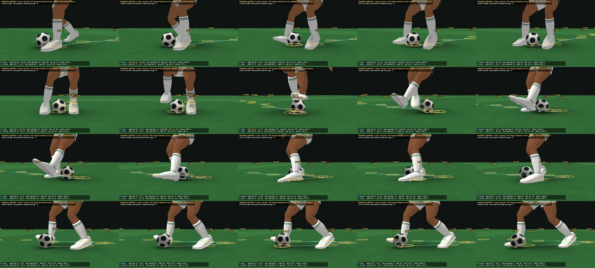

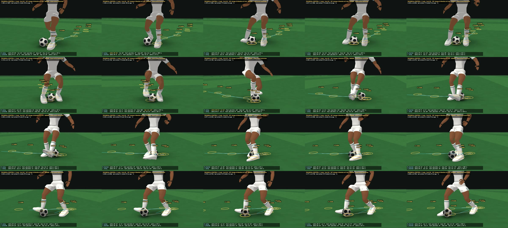

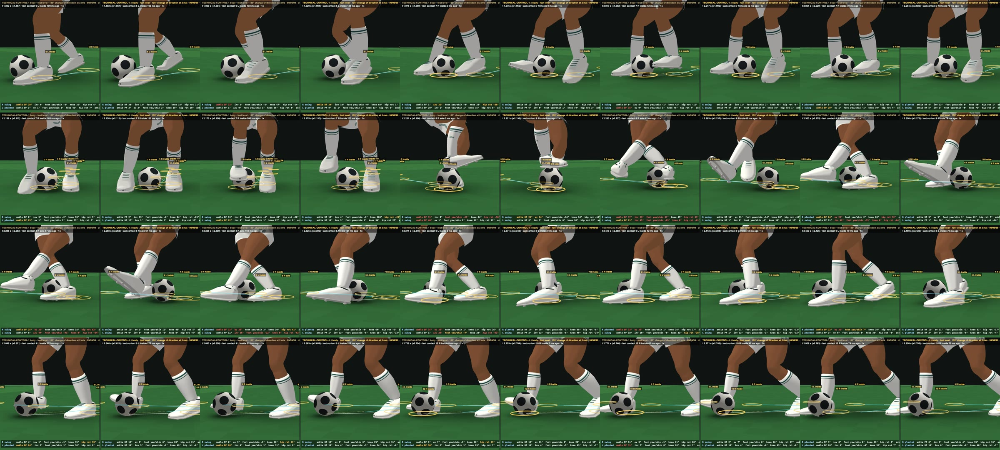
| ratings | ankle ω p99 · worst °/s TC1 → TC1.1 | worst DF ° | min knee ° | beyond hard range % | boot in ball frames | slip mm | late decisions | worst surface error ° (prepared) |
|---|---|---|---|---|---|---|---|---|
| 99/99/99 | 1497 · 20970 → 836 · 1155 | 63 → 28 | 0.2 → 7.5 | 47.5 → 0 | 496 → 5 | 0 → 0 | 1 | 23.6 |
| 80/80/80 | 889 · 2354 → 792 · 1120 | 61 → 27 | 0.2 → 12.8 | 45.6 → 0 | 472 → 7 | 0 → 0 | 1 | 16.0 |
| 50/50/50 | 1063 · 3202 → 750 · 1110 | 80 → 27 | 0.2 → 13.0 | 55.8 → 0 | 284 → 5 | 0 → 3.5 | 1 | 14.7 |
Flagged contacts (visually infeasible as scheduled, or at a limit): 99 · 1.767 s L inside: late decision (INSIDE→INSIDE Δ33°) · 80 · 1.767 s L inside: late decision (INSIDE→INSIDE Δ43°) · 50 · 1.767 s L inside: late decision (INSIDE→INSIDE Δ56°)
10 · sole stop — STOP · seed 1 · window 1.15–2.45 s · open in the lab · TC1 vs TC1.1

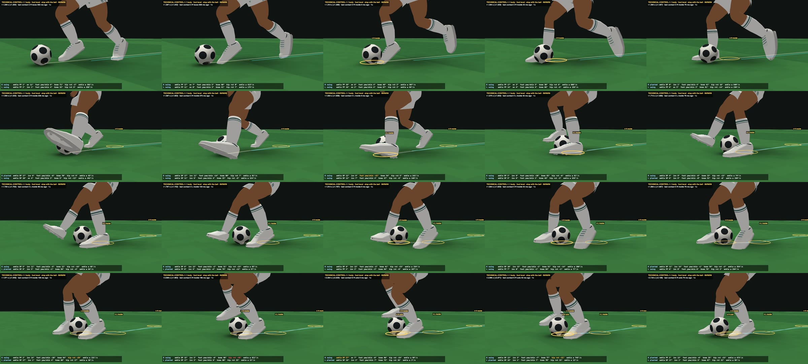

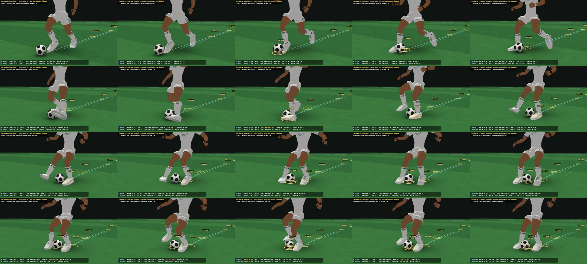

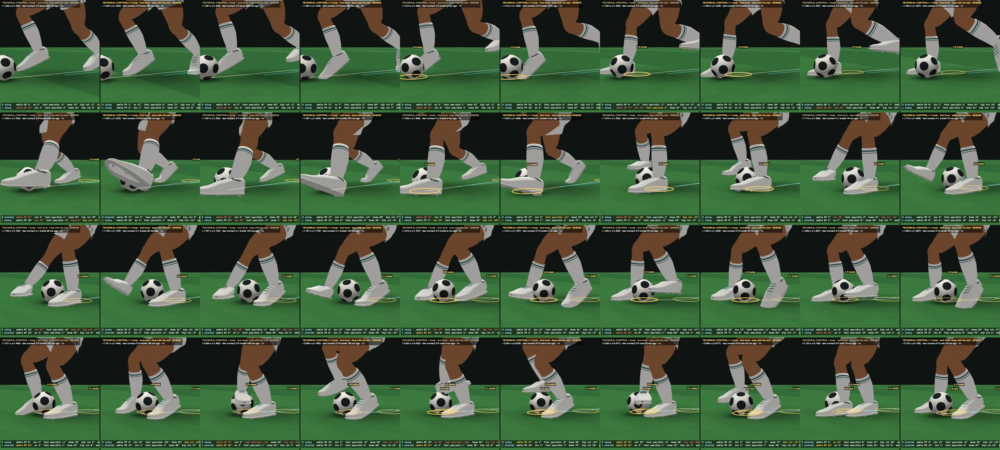
| ratings | ankle ω p99 · worst °/s TC1 → TC1.1 | worst DF ° | min knee ° | beyond hard range % | boot in ball frames | slip mm | late decisions | worst surface error ° (prepared) |
|---|---|---|---|---|---|---|---|---|
| 99/99/99 | 2266 · 6126 → 785 · 1129 | 88 → 28 | 0.2 → 8.6 | 59.3 → 0.06 | 430 → 7 | 0 → 0 | 1 | 19.0 |
| 80/80/80 | 1973 · 6028 → 871 · 1208 | 88 → 27 | 0.2 → 7.1 | 73.5 → 0 | 402 → 3 | 0 → 0 | 1 | 19.2 |
| 50/50/50 | 1990 · 5002 → 1166 · 1381 | 88 → 21 | 0.2 → 10.3 | 72.8 → 0 | 282 → 2 | 0 → 0 | 1 | 22.6 |
Flagged contacts (visually infeasible as scheduled, or at a limit): 99 · 1.288 s R inside: late decision (LACES→INSIDE Δ55°) · 80 · 1.288 s R inside: late decision (LACES→INSIDE Δ63°) · 50 · 1.288 s R inside: late decision (LACES→INSIDE Δ144°)
11 · 60° cut — CUT60 · seed 1 · window 1.3–2.3 s · open in the lab · TC1 vs TC1.1

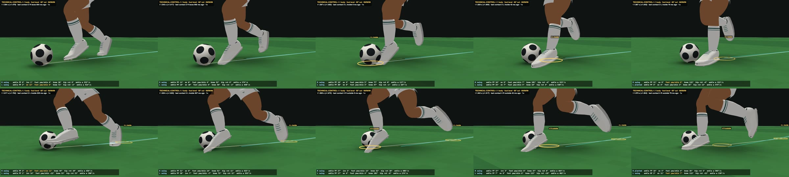

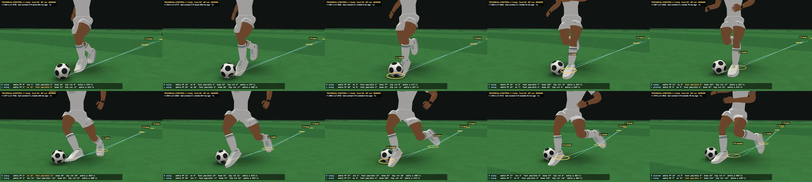

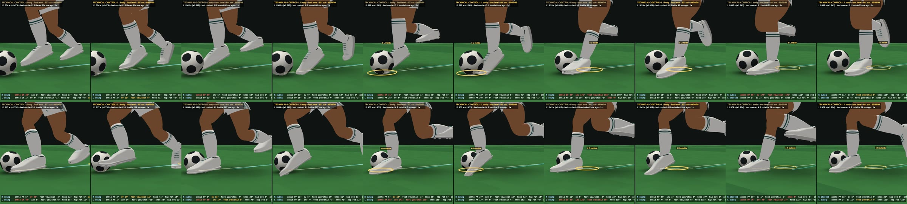
| ratings | ankle ω p99 · worst °/s TC1 → TC1.1 | worst DF ° | min knee ° | beyond hard range % | boot in ball frames | slip mm | late decisions | worst surface error ° (prepared) |
|---|---|---|---|---|---|---|---|---|
| 99/99/99 | 4513 · 4811 → 860 · 1248 | 89 → 20 | 0.2 → 9.8 | 95.1 → 0 | 151 → 0 | 2.2 → 0 | 1 | 10.1 |
| 80/80/80 | 4476 · 4805 → 913 · 1124 | 89 → 20 | 0.2 → 9.8 | 94.7 → 0 | 146 → 0 | 0.6 → 0 | 1 | 11.6 |
| 50/50/50 | 4254 · 4791 → 954 · 1430 | 90 → 19 | 0.2 → 8.4 | 102.2 → 0 | 121 → 0 | 0 → 0 | 0 | 20.5 |
Flagged contacts (visually infeasible as scheduled, or at a limit): 99 · 1.563 s L inside: late decision (LACES→INSIDE Δ27°) · 80 · 1.563 s L inside: late decision (LACES→INSIDE Δ29°)
12 · 90° cut — CUT90 · seed 1 · window 1.4–2.8 s · open in the lab · TC1 vs TC1.1

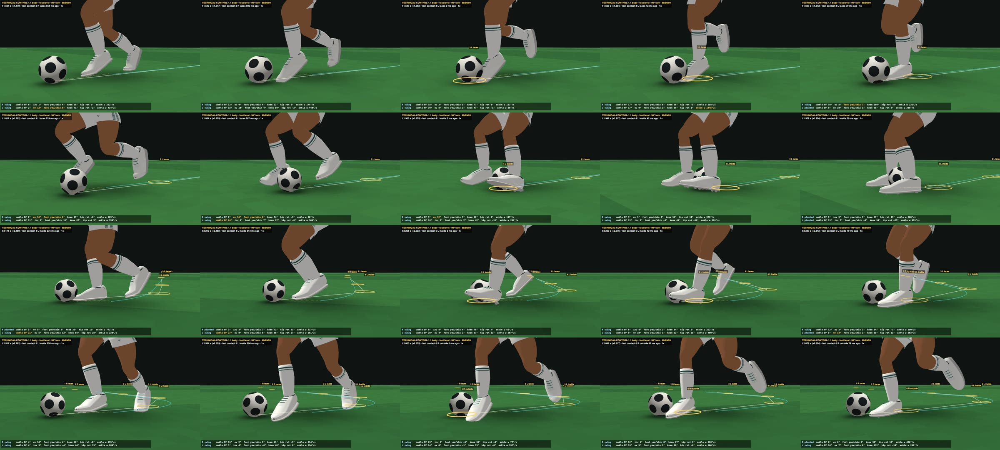

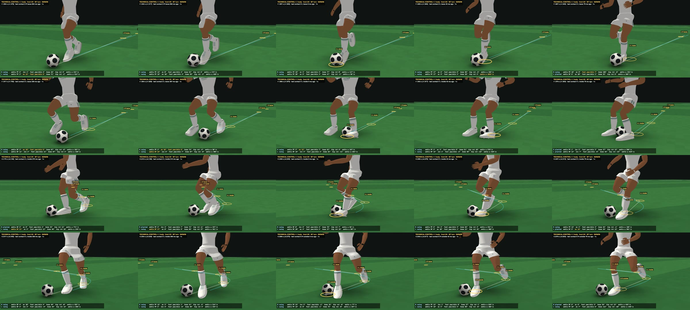

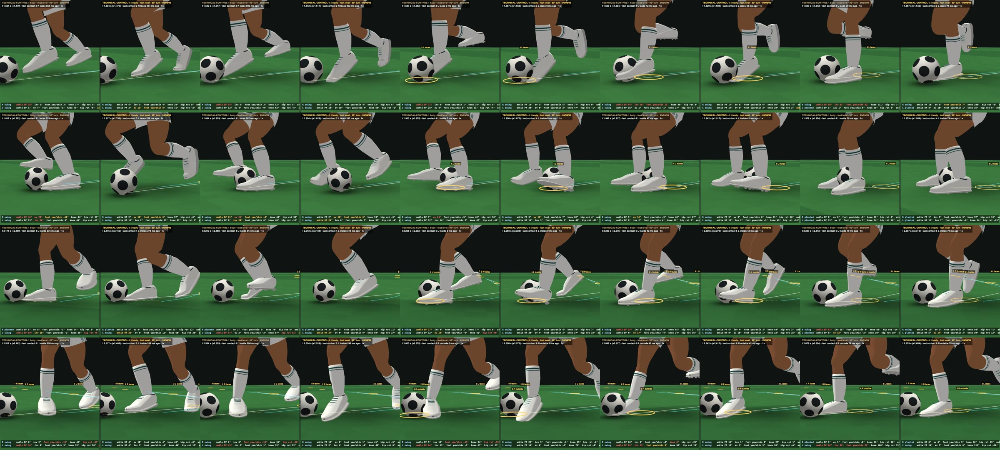
| ratings | ankle ω p99 · worst °/s TC1 → TC1.1 | worst DF ° | min knee ° | beyond hard range % | boot in ball frames | slip mm | late decisions | worst surface error ° (prepared) |
|---|---|---|---|---|---|---|---|---|
| 99/99/99 | 4227 · 4717 → 964 · 1258 | 89 → 28 | 0.2 → 9.8 | 94.8 → 0 | 247 → 4 | 0 → 0.2 | 0 | 13.2 |
| 80/80/80 | 3441 · 4717 → 827 · 1077 | 89 → 20 | 0.2 → 9.8 | 98.1 → 0 | 149 → 0 | 0 → 0 | 1 | 16.8 |
| 50/50/50 | 2507 · 4717 → 915 · 1430 | 89 → 19 | 0.2 → 8.3 | 99.6 → 0.55 | 122 → 0 | 0 → 4.2 | 0 | 17.4 |
Flagged contacts (visually infeasible as scheduled, or at a limit): 80 · 1.563 s L inside: late decision (LACES→INSIDE Δ18°)
13 · 120° tight turn — CUT120 · seed 1 · window 1.4–2.6 s · open in the lab · TC1 vs TC1.1

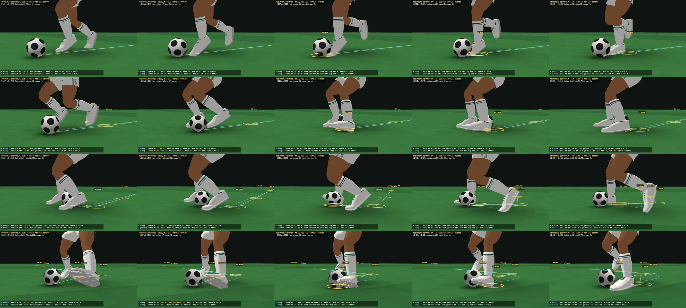

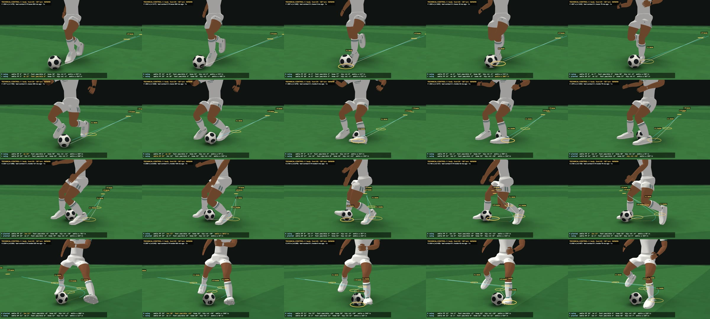

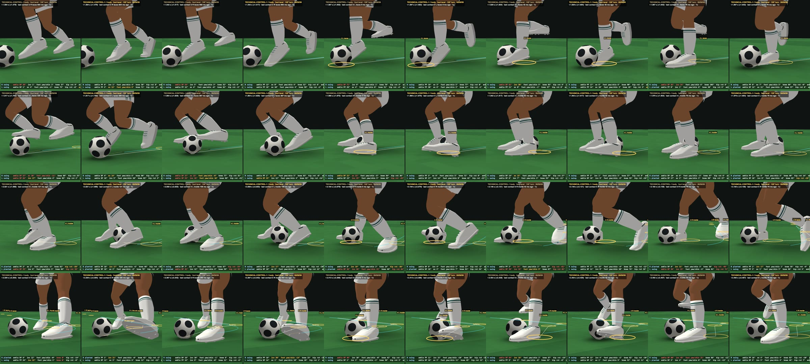
| ratings | ankle ω p99 · worst °/s TC1 → TC1.1 | worst DF ° | min knee ° | beyond hard range % | boot in ball frames | slip mm | late decisions | worst surface error ° (prepared) |
|---|---|---|---|---|---|---|---|---|
| 99/99/99 | 3799 · 4717 → 1005 · 1587 | 89 → 28 | 0.2 → 9.8 | 100.0 → 0 | 286 → 0 | 1 → 7.6 | 1 | 11.9 |
| 80/80/80 | 2491 · 4717 → 827 · 1031 | 89 → 22 | 0.2 → 8.0 | 103.2 → 0.47 | 158 → 0 | 0 → 1.1 | 1 | 26.1 |
| 50/50/50 | 2372 · 4717 → 898 · 1430 | 90 → 19 | 0.2 → 7.6 | 93.6 → 0 | 117 → 0 | 0 → 3.5 | 0 | 20.3 |
Flagged contacts (visually infeasible as scheduled, or at a limit): 99 · 2.079 s R inside: late decision (INSIDE→INSIDE Δ40°) · 80 · 1.563 s L inside: late decision (LACES→INSIDE Δ22°)
14 · 150° tight turn (Cruyff-like) — CUT150 · seed 1 · window 1.4–2.55 s · open in the lab · TC1 vs TC1.1

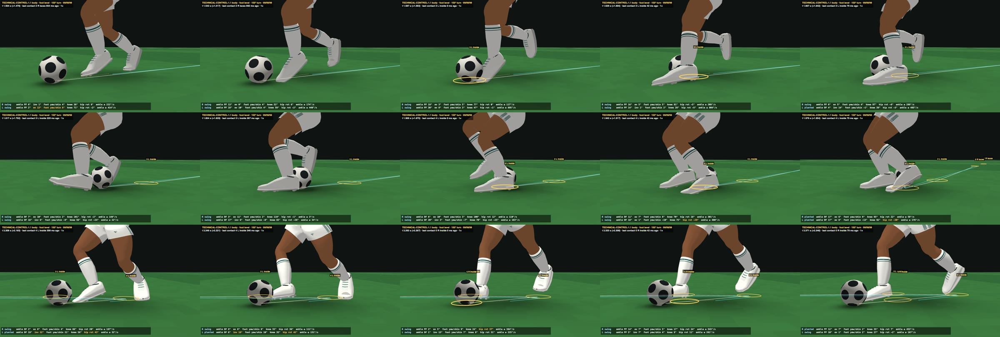

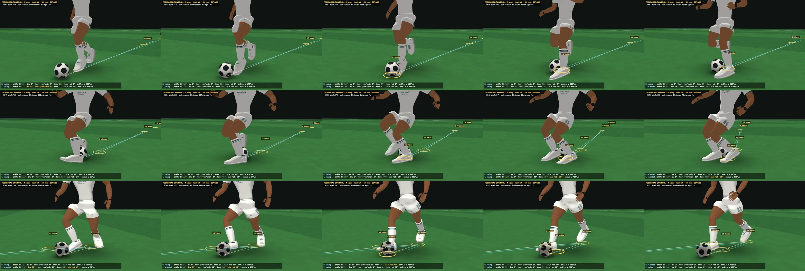

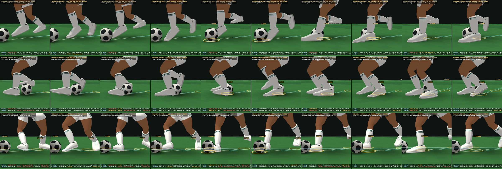
| ratings | ankle ω p99 · worst °/s TC1 → TC1.1 | worst DF ° | min knee ° | beyond hard range % | boot in ball frames | slip mm | late decisions | worst surface error ° (prepared) |
|---|---|---|---|---|---|---|---|---|
| 99/99/99 | 3787 · 19027 → 829 · 1393 | 89 → 22 | 0.2 → 7.6 | 107.3 → 0 | 216 → 3 | 0 → 7.7 | 1 | 29.7 |
| 80/80/80 | 2622 · 17913 → 834 · 1388 | 89 → 28 | 0.2 → 7.1 | 107.4 → 0.64 | 250 → 10 | 0 → 5.6 | 1 | 37.6 |
| 50/50/50 | 2838 · 18252 → 1032 · 1908 | 90 → 21 | 0.2 → 7.1 | 103.5 → 1.13 | 183 → 11 | 0 → 6.8 | 1 | 34.6 |
Flagged contacts (visually infeasible as scheduled, or at a limit): 99 · 1.563 s L inside: late decision (LACES→INSIDE Δ149°) · 80 · 1.563 s L inside: late decision (LACES→INSIDE Δ42°) · 80 · 2.421 s R inside: surface 37.6° off the impulse · 80 · 3.117 s R inside: reach 0.987 · 50 · 1.563 s L inside: late decision (LACES→INSIDE Δ165°)
15 · 180° reversal — CUT180 · seed 1 · window 1.4–2.55 s · open in the lab · TC1 vs TC1.1

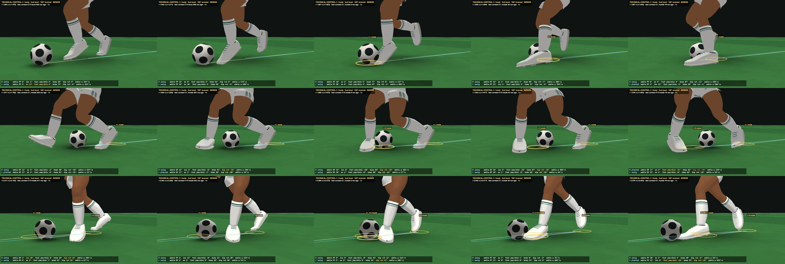

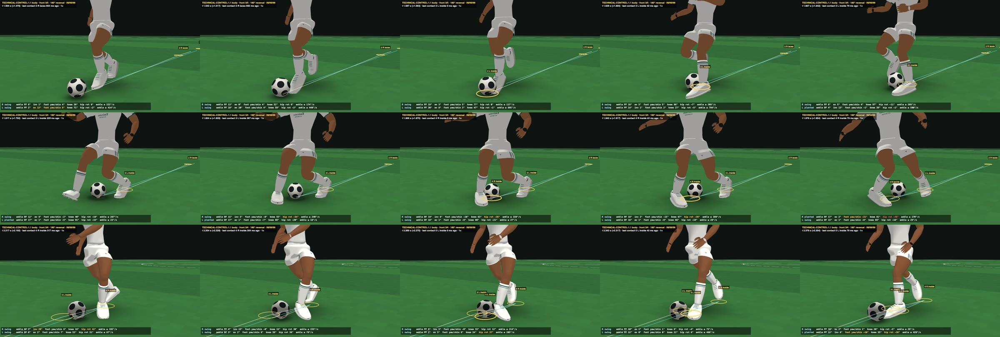

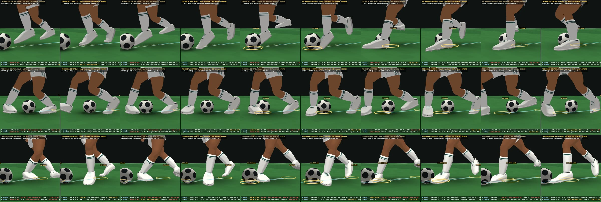
| ratings | ankle ω p99 · worst °/s TC1 → TC1.1 | worst DF ° | min knee ° | beyond hard range % | boot in ball frames | slip mm | late decisions | worst surface error ° (prepared) |
|---|---|---|---|---|---|---|---|---|
| 99/99/99 | 4398 · 18561 → 834 · 1364 | 89 → 20 | 0.2 → 7.8 | 112.4 → 0.39 | 225 → 5 | 0 → 8.6 | 1 | 35.0 |
| 80/80/80 | 2447 · 4717 → 834 · 1053 | 89 → 27 | 0.2 → 7.1 | 101.1 → 0.43 | 264 → 5 | 0 → 16 | 1 | 24.9 |
| 50/50/50 | 2319 · 4717 → 902 · 1576 | 90 → 19 | 0.2 → 9.8 | 104.4 → 1 | 159 → 3 | 0 → 16.1 | 1 | 25.9 |
Flagged contacts (visually infeasible as scheduled, or at a limit): 99 · 1.563 s L inside: late decision (LACES→INSIDE Δ141°) · 80 · 1.563 s L inside: late decision (LACES→INSIDE Δ42°) · 50 · 1.563 s L inside: late decision (LACES→INSIDE Δ165°)
16 · dominant-foot repeated touches (left-footed) — CUT90 · style dominant foot · seed 2 · left-footed · window 1–2.8 s · open in the lab · TC1 vs TC1.1

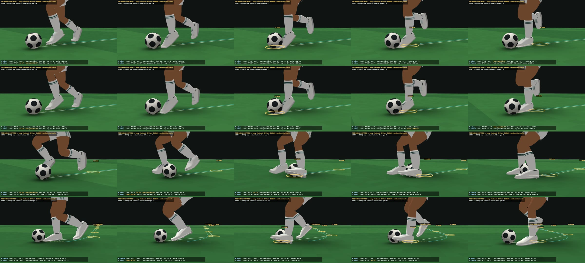

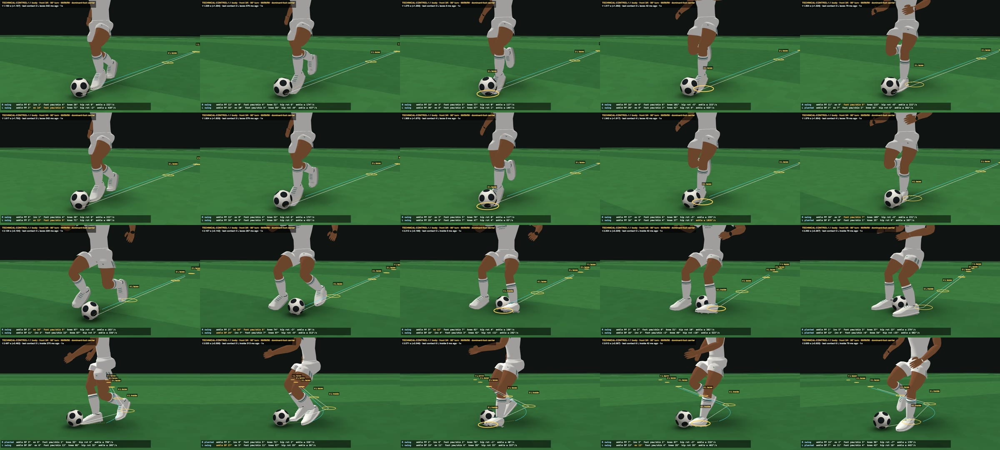

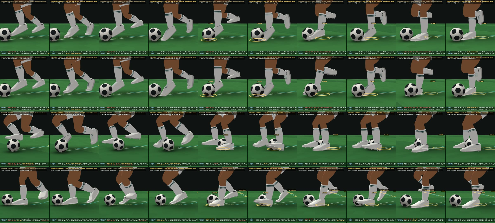
| ratings | ankle ω p99 · worst °/s TC1 → TC1.1 | worst DF ° | min knee ° | beyond hard range % | boot in ball frames | slip mm | late decisions | worst surface error ° (prepared) |
|---|---|---|---|---|---|---|---|---|
| 99/99/99 | 4326 · 5016 → 992 · 1253 | 89 → 28 | 0.2 → 9.8 | 95.2 → 0 | 269 → 3 | 0 → 0 | 0 | 18.2 |
| 80/80/80 | 3301 · 4717 → 871 · 1405 | 89 → 27 | 0.2 → 9.8 | 96.2 → 0 | 231 → 0 | 0 → 0 | 0 | 15.4 |
| 50/50/50 | 2475 · 4717 → 929 · 1433 | 89 → 22 | 0.2 → 9.8 | 96.3 → 0 | 159 → 0 | 0 → 3.4 | 1 | 14.9 |
Flagged contacts (visually infeasible as scheduled, or at a limit): 50 · 1.875 s L outside: late decision (LACES→OUTSIDE Δ34°)
4 · Contacts flagged as visually infeasible as scheduled (or at a limit)
36 of 410 contacts. Most are late decisions: the first touch after an intent change — the simulation decides it at the contact (its preview is the planned carry until then), so no body can prepare it without changing gameplay. The others: a touching leg at ≥ 98.5 % of its length (the reach the contact needs at that moment), and the Cruyff-like contacts behind the standing leg whose surface sits at the edge of its cone.
| case | ratings | t (s from the first contact) | foot | surface | why |
|---|---|---|---|---|---|
| accel | 99/99/99 | 0.35 | L | inside | reach 0.986 |
| inside | 99/99/99 | 2.883 | R | inside | reach 0.986 |
| inside | 80/80/80 | 0.683 | R | inside | reach 0.986 |
| outside | 99/99/99 | 1.25 | R | outside | late decision (INSIDE→OUTSIDE Δ127°) |
| outside | 80/80/80 | 1.25 | R | outside | late decision (INSIDE→OUTSIDE Δ73°) |
| in_out | 99/99/99 | 2.046 | R | inside | late decision (INSIDE→INSIDE Δ25°) |
| in_out | 99/99/99 | 2.567 | R | outside | late decision (OUTSIDE→OUTSIDE Δ27°) |
| in_out | 80/80/80 | 0.683 | R | inside | reach 0.986 |
| in_out | 80/80/80 | 2.046 | R | inside | late decision (INSIDE→INSIDE Δ32°); reach 0.986 |
| out_in | 80/80/80 | 2.421 | R | laces | late decision (OUTSIDE→LACES Δ3°) |
| double | 99/99/99 | 4.238 | R | inside | late decision (INSIDE→INSIDE Δ34°) |
| double | 80/80/80 | 0.683 | R | inside | reach 0.986 |
| drag | 99/99/99 | 1.767 | L | inside | late decision (INSIDE→INSIDE Δ33°) |
| drag | 80/80/80 | 1.767 | L | inside | late decision (INSIDE→INSIDE Δ43°) |
| stop | 99/99/99 | 1.288 | R | inside | late decision (LACES→INSIDE Δ55°) |
| stop | 80/80/80 | 1.288 | R | inside | late decision (LACES→INSIDE Δ63°) |
| cut60 | 99/99/99 | 1.563 | L | inside | late decision (LACES→INSIDE Δ27°) |
| cut60 | 80/80/80 | 1.563 | L | inside | late decision (LACES→INSIDE Δ29°) |
| cut90 | 80/80/80 | 1.563 | L | inside | late decision (LACES→INSIDE Δ18°) |
| turn120 | 99/99/99 | 2.079 | R | inside | late decision (INSIDE→INSIDE Δ40°) |
| turn120 | 80/80/80 | 1.563 | L | inside | late decision (LACES→INSIDE Δ22°) |
| turn150 | 99/99/99 | 1.563 | L | inside | late decision (LACES→INSIDE Δ149°) |
| turn150 | 80/80/80 | 1.563 | L | inside | late decision (LACES→INSIDE Δ42°) |
| turn150 | 80/80/80 | 2.421 | R | inside | surface 37.6° off the impulse |
| turn150 | 80/80/80 | 3.117 | R | inside | reach 0.987 |
| turn180 | 99/99/99 | 1.563 | L | inside | late decision (LACES→INSIDE Δ141°) |
| turn180 | 80/80/80 | 1.563 | L | inside | late decision (LACES→INSIDE Δ42°) |
| inside | 50/50/50 | 1.367 | R | inside | late decision (INSIDE→INSIDE Δ43°) |
| outside | 50/50/50 | 1.25 | R | outside | late decision (LACES→OUTSIDE Δ66°) |
| in_out | 50/50/50 | 2.046 | R | inside | late decision (INSIDE→INSIDE Δ51°) |
| double | 50/50/50 | 1.367 | R | inside | late decision (INSIDE→INSIDE Δ43°) |
| drag | 50/50/50 | 1.767 | L | inside | late decision (INSIDE→INSIDE Δ56°) |
| stop | 50/50/50 | 1.288 | R | inside | late decision (LACES→INSIDE Δ144°) |
| turn150 | 50/50/50 | 1.563 | L | inside | late decision (LACES→INSIDE Δ165°) |
| turn180 | 50/50/50 | 1.563 | L | inside | late decision (LACES→INSIDE Δ165°) |
| dominant | 50/50/50 | 1.875 | L | outside | late decision (LACES→OUTSIDE Δ34°) |
5 · Ranges of motion
| joint (anatomical sign) | hard (never past; soft saturation) | comfort (where the planner aims) |
|---|---|---|
| hip rotation (external +) | -38 … 45° | -26 … 36° |
| knee flexion | 4 … 148° (soft extension limit at 7°) | 6 … 140° |
| tibial axial rotation (external +), grows with knee flexion | -3 … 5° straight → -20 … 32° at 90° | -2 … 3° → -14 … 23° |
| ankle dorsiflexion (+) / plantarflexion (−) | -50 … 30° | -42 … 20° |
| inversion (+) / eversion (−) | -18 … 22° | -11 … 15° |
| forefoot abduction (toe-out +) | -10 … 10° | -6 … 6° |
The hard box contains the approved running gait (RUN-1 reaches 31° dorsiflexion in late stance and 18° eversion). Of a foot's yaw relative to the pelvis the hip takes 80 %, the tibia 14 %, the forefoot 6 % — each saturating in its range, what is left becomes an orientation error (measured).
6 · Diagnostics (tools/tc11_diag.mjs)
- ankle angular velocity and acceleration (the foot relative to the shin), the foot's world angular velocity
- foot yaw relative to the shin (tibial rotation + forefoot abduction), ankle dorsi / plantarflexion, inversion / eversion, knee flexion, hip rotation (swing – twist about the femur), each against the hard and comfort ranges
- at every contact: the boot – ball gap and the boot face that meets the ball, the surface's orientation against the impulse, the ankle's own rotation and the toe's yaw in the 50 ms before and after, the touching leg's reach, the support knee
- every frame: a boot inside the ball (swinging or planted); a planted foot's slip at its support point
- RUN-1 (the approved running gait) measured the same way as the human reference
I cannot play video in real time: everything above was judged from stills, contact strips and per-frame measurements. The motion at full speed and in slow motion is yours to judge.